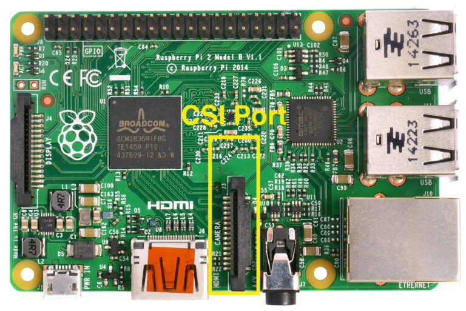

tl;dr
Diese Woche musste ich lernen, dass wohl doch nicht alles Plug-and-Play bei Windows als auch beim Pi ist. Die offizielle Kamera wird nicht unterstützt.
Wieso, weshalb?
Nachdem ich lange versucht habe mittels den UWP Beispielen von Microsoft die offizielle Raspberry Pi Kamera via dem CSI-Port anzusprechen, habe ich dich einmal auf SO nachgefragt wie es denn eigentlich richtig geht und wieso überhaupt das fehlschlägt.
 Basierend auf Wikipedia Bild:
Stackoverflow to the rescue Das Stockoverflow Mitglied stormbolt hatte eine erklärend Antwort auf meine Frage im Raspberry Pi Bereich gehabt. Diese ist gleichzeitig demotivierend jedoch lässt diese mich auch zuversichtlich in die Zukunft blicken lässt:
Is my understanding the main problem was the lack of open source drivers, and the unwillingness of Broadcom to release propietary drivers for windows IoT. Now that there are open source drivers for the CSI and DSI ports, it should be possible to port them to windows, if someone with the technical knowledge steps up to the task.
Stackoverflow Post
Es is ja nicht das einzige … Mal sehen was zu erst kommen wird, Raspberry Pi 4 oder CSI Support in Windows 10 IoT Core.
Zurück.jpg){kind=link}